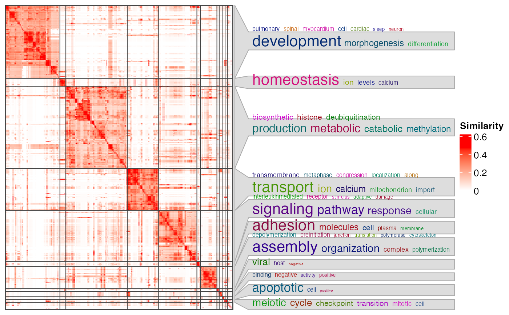

Visualize the similarity matrix and the clustering
Usage
ht_clusters(
mat,
cl,
dend = NULL,
col = c("white", "red"),
draw_word_cloud = TRUE,
min_term = round(nrow(mat) * 0.01),
order_by_size = FALSE,
stat = "pvalue",
min_stat = ifelse(stat == "count", 5, 0.05),
exclude_words = character(0),
max_words = 10,
word_cloud_grob_param = list(),
fontsize_range = c(4, 16),
bg_gp = gpar(fill = "#DDDDDD", col = "#AAAAAA"),
column_title = NULL,
ht_list = NULL,
use_raster = TRUE,
run_draw = TRUE,
...
)Arguments
- mat
A similarity matrix.
- cl
Cluster labels inferred from the similarity matrix, e.g. from
cluster_terms()orbinary_cut().- dend
Used internally.
- col
A vector of colors that map from 0 to the 97.5^th percentile of the similarity values. The value can also be a color mapping function generated by
circlize::colorRamp2().- draw_word_cloud
Whether to draw the word clouds.
- min_term
Minimal number of functional terms in a cluster. All the clusters with size less than
min_termare all merged into one separated cluster in the heatmap.- order_by_size
Whether to reorder clusters by their sizes. The cluster that is merged from small clusters (size <
min_term) is always put to the bottom of the heatmap.- stat
Type of value for mapping to the font size of keywords in the word clouds. There are two options: "count": simply number of keywords; "pvalue": enrichment on keywords is performed (by fisher's exact test) and -log10(pvalue) is used to map to font sizes.
- min_stat
Minimal value for
statfor selecting keywords.- exclude_words
Words that are excluded in the word cloud.
- max_words
Maximal number of words visualized in the word cloud.
- word_cloud_grob_param
A list of graphic parameters passed to
word_cloud_grob().- fontsize_range
The range of the font size. The value should be a numeric vector with length two. The font size interpolation is linear.
- bg_gp
Graphics parameters for controlling word cloud annotation background.
- column_title
Column title for the heatmap.
- ht_list
A list of additional heatmaps added to the left of the similarity heatmap.
- use_raster
Whether to write the heatmap as a raster image.
- run_draw
Internally used.
- ...
Other arguments passed to
ComplexHeatmap::draw,HeatmapList-method.
Value
A ComplexHeatmap::HeatmapList object.
Examples
# \donttest{
mat = readRDS(system.file("extdata", "random_GO_BP_sim_mat.rds",
package = "simplifyEnrichment"))
cl = binary_cut(mat)
ht_clusters(mat, cl, word_cloud_grob_param = list(max_width = 80))
#> Perform keywords enrichment for 11 GO lists...

ht_clusters(mat, cl, word_cloud_grob_param = list(max_width = 80),
order_by_size = TRUE)
#> Perform keywords enrichment for 11 GO lists...
 # }
# }